- Installation
- Functions
- Uploading and referencing tables with
dplyr -
pins - Back-end examples
DBIconnections
The main goal of connections is to integrate DBI-compliant packages with the RStudio IDE’s Connection Pane. Packages such as RPostgres, RSQLite, RMariaDB and bigrquery connect R to those databases, but do not provide a direct integration with the Connections Pane. connections reads the configuration of the connection and creates the integration with RStudio.
A second goal is to provide integration with the pins package. The connections package allows you to pin database connections and dplyr table objects.
Installation
Install the development version from GitHub with:
# install.packages("remotes")
remotes::install_github("rstudio/connections")Functions
The two main functions added by connections are:
-
connection_open()- Opens the database connection. Use instead ofdbConnect(), but use the exact same arguments. It also automatically starts the Connections pane. -
connection_close()- Closes the database connection.
library(connections)
library(RSQLite)
con <- connection_open(SQLite(), "local.sqlite")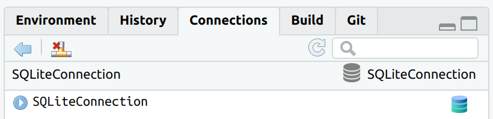
The connection can now be closed by using the appropriate button in the Connections pane, or by using connection_close()
connection_close(con)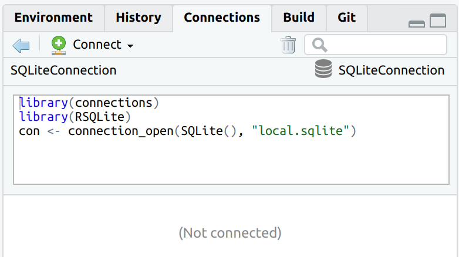
The connection code is parsed when connecting to the database, and it is visible once the connection is closed.
Uploading and referencing tables with dplyr
connections integrates with dplyr by supporting the following two functions:
-
tbl()- To create a pointer to a table or view within the database. -
copy_to()- To copy data from the R session to the database.
The version of copy_to() inside connections automatically updates the Connections pane, so the new table automatically shows up.
con <- connection_open(SQLite(), "local.sqlite")
copy_to(con, mtcars, temporary = FALSE, overwrite = TRUE)
#> # Source: table<mtcars> [?? x 11]
#> # Database: sqlite 3.41.2 [/Users/edgar/r_projects/connections/local.sqlite]
#> mpg cyl disp hp drat wt qsec vs am gear carb
#> <dbl> <dbl> <dbl> <dbl> <dbl> <dbl> <dbl> <dbl> <dbl> <dbl> <dbl>
#> 1 21 6 160 110 3.9 2.62 16.5 0 1 4 4
#> 2 21 6 160 110 3.9 2.88 17.0 0 1 4 4
#> 3 22.8 4 108 93 3.85 2.32 18.6 1 1 4 1
#> 4 21.4 6 258 110 3.08 3.22 19.4 1 0 3 1
#> 5 18.7 8 360 175 3.15 3.44 17.0 0 0 3 2
#> 6 18.1 6 225 105 2.76 3.46 20.2 1 0 3 1
#> 7 14.3 8 360 245 3.21 3.57 15.8 0 0 3 4
#> 8 24.4 4 147. 62 3.69 3.19 20 1 0 4 2
#> 9 22.8 4 141. 95 3.92 3.15 22.9 1 0 4 2
#> 10 19.2 6 168. 123 3.92 3.44 18.3 1 0 4 4
#> # ℹ more rowsTo use an existing table inside the database use tbl().
db_mtcars <- tbl(con, "mtcars")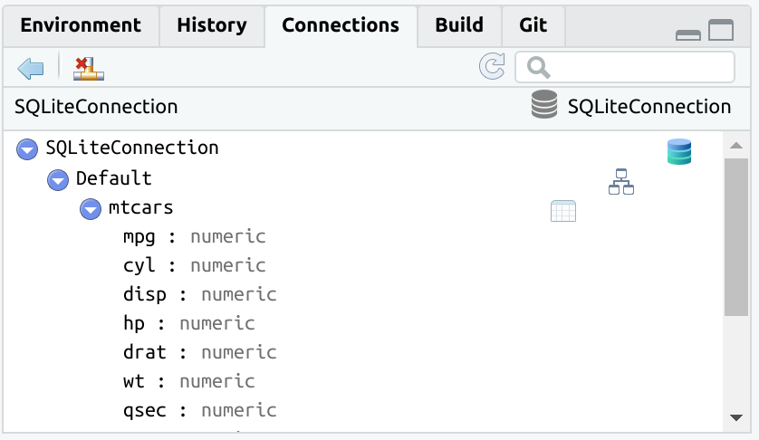
The tbl() function opens the rest of the already available dplyr database integration.
db_mtcars %>%
group_by(am) %>%
summarise(avg_mpg = mean(mpg, na.rm = TRUE))
#> # Source: SQL [2 x 2]
#> # Database: sqlite 3.41.2 [/Users/edgar/r_projects/connections/local.sqlite]
#> am avg_mpg
#> <dbl> <dbl>
#> 1 0 17.1
#> 2 1 24.4
pins
The connections package integrates with pins. It adds the ability to “pin” database connections and queries. It follows the same approach as the vetiver package. connections now has two new functions:
Pin a database connection
The connection_pin_write() function does not save the R object. It records the code necessary to recreate the connection.
library(pins)
board <- board_folder("~/pins")
connection_pin_write(board, con, name = "my_conn")
#> Creating new version '20231215T141203Z-8d9ce'
#> Writing to pin 'my_conn'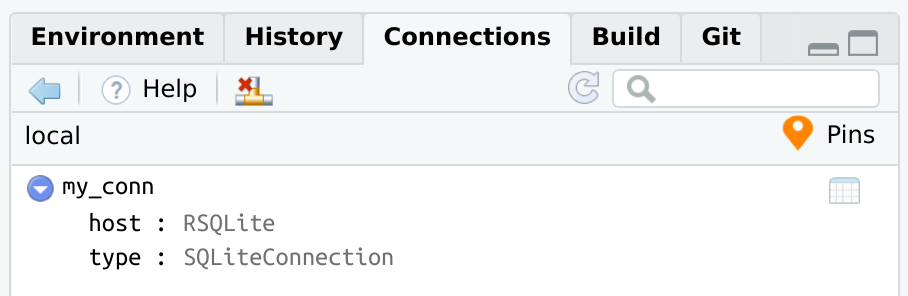
If you wish to see the code that connections will use when recreating the conneciton from the pin, you can use connection_code():
connection_code(con)
#> library(connections)
#> library(RSQLite)
#> con <- connection_open(SQLite(), "local.sqlite")connection_pin_read() will replay the exact same code used to initially connect to the database. Assign the output to a variable, such as con1. The variable will work just like any connection variable.
con1 <- connection_pin_read(board, "my_conn")The con1 variable is now a regular database connection variable.
Pin a dplyr database query
When dplyr works with database data, the resulting query is not executed until the data is explicitly collected into R, or when printing the top results to the R Console. The pin records two things:
The
dplyrR object that contains all of the transformations. It does not save the actual results.The necessary information to recreate the database connection. This is to make sure that the data is being retrieved from the original database connection.
connection_pin_write(board, db_mtcars, name = "avg_mpg")
#> Creating new version '20231215T141203Z-41590'
#> Writing to pin 'avg_mpg'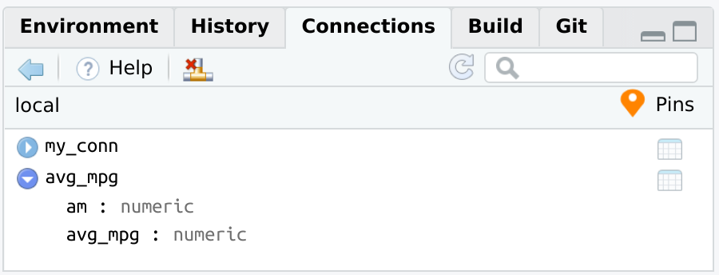
connection_pin_read() will connect to the database, and return the dplyr object. Without assigning it to a variable, the pin will immediately print the results of the database. Those results are being processed at the time connection_pin_read() runs.
connection_pin_read(board, "avg_mpg")
#> # Source: SQL [2 x 2]
#> # Database: sqlite 3.41.2 [/Users/edgar/r_projects/connections/local.sqlite]
#> am avg_mpg
#> <dbl> <dbl>
#> 1 0 17.1
#> 2 1 24.4Full pins example
The way pins integrates with databases, via the connections package, allows to open the connection from a pin, and pipe all of the subsequent code into a new pin. Afterwards, that pin can be used to collect or to continue using the dplyr object.
board <- board_folder("~/pins")
con <- connection_pin_read(board, "my_conn")
tbl_summary <- con %>%
tbl("mtcars") %>%
group_by(cyl) %>%
summarise(avg_mpg = mean(mpg, na.rm = TRUE))
connection_pin_write(board, tbl_summary, name = "cyl_mpg")
#> Creating new version '20231215T141203Z-59396'
#> Writing to pin 'cyl_mpg'
connection_close(con)
connection_pin_read(board, "cyl_mpg")
#> # Source: SQL [3 x 2]
#> # Database: sqlite 3.41.2 [/Users/edgar/r_projects/connections/local.sqlite]
#> cyl avg_mpg
#> <dbl> <dbl>
#> 1 4 26.7
#> 2 6 19.7
#> 3 8 15.1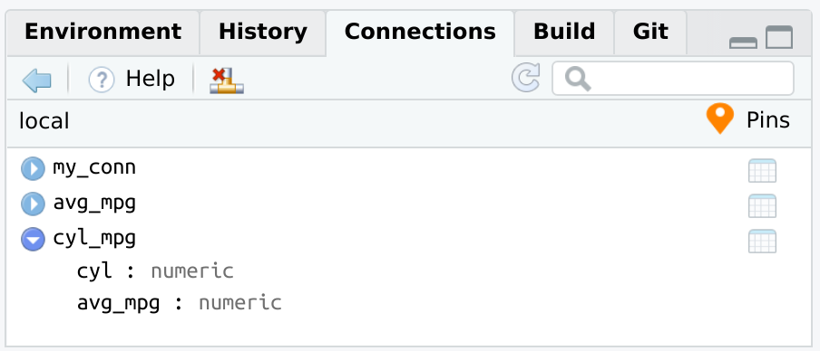
Back-end examples
There are a couple of examples of how the Connections pane will look when opening the connection via connections.
BigQuery, via bigrquery
library(connections)
library(bigrquery)
con <- connection_open(
bigquery(),
project = "bigquery-public-data",
dataset = "austin_311",
billing = "my_project_billing",
use_legacy_sql = FALSE
)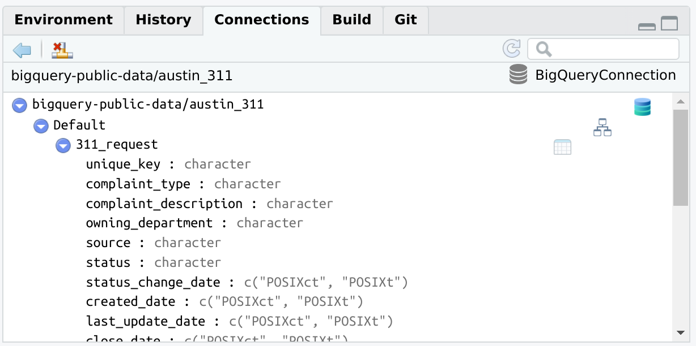
connection_close(con)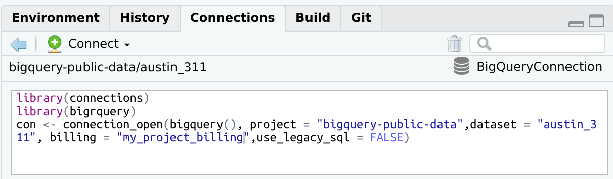
PostgreSQL, via RPostgres
library(connections)
library(RPostgres)
con <- connection_open(
Postgres(),
host = "localhost",
dbname = "datawarehouse",
user = "[user id]",
password = "[password]",
bigint = "integer",
port = "5432"
)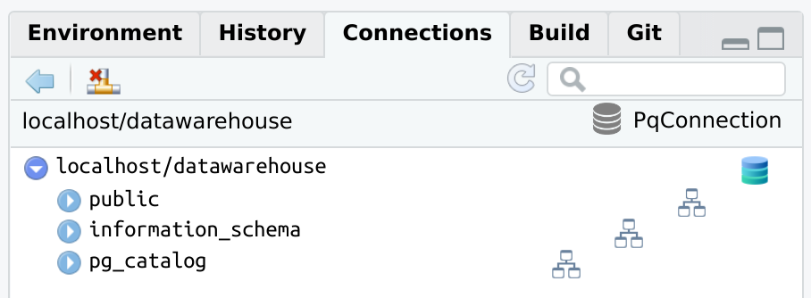
DBI connections
It is possible to integrate DBI connections not opened via connection_open(). To do that, use connection_view() and pass it the variable containing the existing database connection.
library(DBI)
con <- dbConnect(RSQLite::SQLite(), ":memory:")
connection_view(con)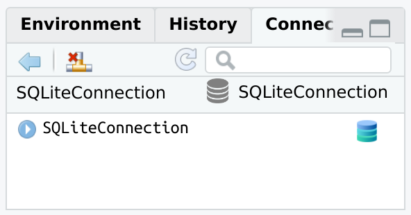
Changes to the database will not automatically load in the Connections pane. The connection_update() function will refresh the pane with the latest.
dbWriteTable(con, "mtcars", mtcars)
connection_update(con)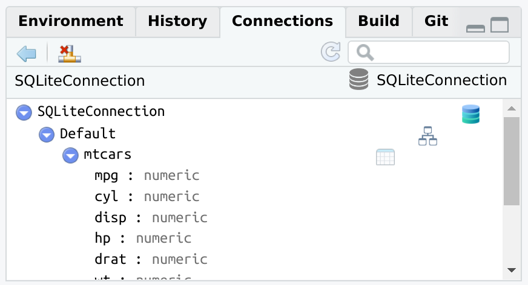
connection_close(con)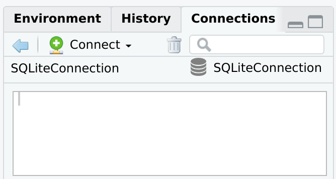